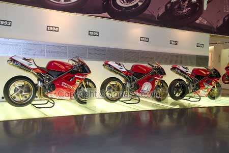

Italy, Bologna, 2004-06.
|
I
can't say that I have been too long in Bologna, but I can say that most of
the time spent in Bologna was in the Ducati factory and Museum. The guided
tour of the factory is in English, and you can actually see them assembling
the bikes there. That's where the good parts stops. During my visit, I didn't se a single yellow 999 in the factory, making
mine quite unique. Hurray. After the tour you visit the museum which is quite nice for 10 minutes. Then you are allowed to buy souvenirs in the local shop. It's even more
expensive in this shop, than the local Ducati dealer in Sweden. This is the bike that Foggy won with in 2002 and 2003, and It's very nice to have seen it. If you are thinking of impressing Ducati with driving to the factory with
your (Ducati?) bike: Don't. They will not be impressed with anything but
your wallet. |